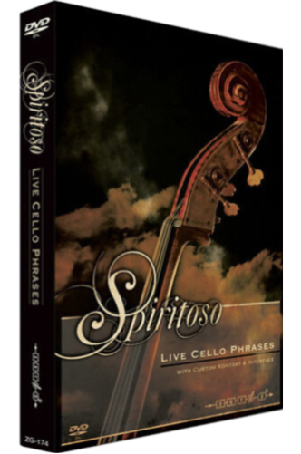

HATSUNE MIKU NT
Hatsune Miku NT es una innovadora propuesta que combina una avanzada tecnología de expresión vocal para canto, una biblioteca de voces, una interfaz de software y un efector de voz especialmente diseñado. El editor vocal actualizado Piapro Studio integra nuevas funciones que mejoran la experiencia de creación musical, permitiendo un control total sobre las expresiones vocales de Hatsune Miku. Con este paquete, al ingresar la letra y la melodía y seleccionar el estilo de expresión y el parámetro VoiceColor, puedes ajustar los matices de la canción, perfeccionando aspectos como la pronunciación de cada nota y la precisión en la afinación y el movimiento tonal.
Además, la combinación de una biblioteca de voces avanzada con un efector de voz de última generación permite expresar una variedad de emociones a través de la voz de Hatsune Miku, como una voz alegre, susurros melancólicos, tonos enojados, voces roncas y hasta voces más sombrías, manteniendo siempre la claridad y la naturalidad. También es posible agregar pronunciaciones decorativas con un solo toque, brindando una amplia gama de posibilidades para explorar diferentes expresiones vocales. Por ello, con Hatsune Miku NT, experimentarás una nueva dimensión de flexibilidad y control creativo en tus producciones vocales.
Hatsune Miku NT Versión paquete
Precio web $2596.48 MXN (impuestos incluidos)
EZ BASS: La fuente de sonido de bajos perfecta para tu producción musical.
EZ BASS es una herramienta potente y fácil de usar que te permite crear fácilmente pistas de bajos profesionales. Ideal para compositores, arreglistas y productores, esta fuente de sonido te ofrece una experiencia de grabación intuitiva, similar a la serie EZ anterior, pero con una nueva tecnología avanzada basada en SUPERIOR DRUMMER 3, lo que mejora la calidad y versatilidad de las composiciones.
Además de la facilidad de uso para grabar frases interpretativas, EZ BASS incluye una función de conversión MIDI que convierte automáticamente las frases MIDI en pistas de bajo completas, ahorrando tiempo y esfuerzo. Los dos tipos de bajos disponibles, "Modern" y "Vintage", brindan una amplia variedad de sonidos, desde el bajo más contemporáneo hasta el clásico, adaptándose a cualquier estilo musical. Con una amplia gama de funciones avanzadas, EZ BASS es la herramienta ideal para creadores de todos los niveles, permitiéndote componer, producir y mejorar tus pistas de bajo con facilidad y precisión.
PISTA EZ BASS
Precio web $2884.98 MXN (impuestos incluidos)
EZ BASS
SUPERIOR DRUMMER 3
SUPERIOR DRUMMER 3: La herramienta definitiva para baterías de estudio.
SUPERIOR DRUMMER 3 (S3) lleva la creación de baterías a un nivel completamente nuevo, ofreciendo una interfaz de usuario completamente rediseñada y un software de vanguardia para la producción de baterías. Con S3, experimentarás la reproducción más auténtica de la grabación de batería en estudio, con una calidad que ha dominado la industria durante años. La interfaz de usuario de S3 ha sido totalmente reconstruida, permitiéndote personalizar tu experiencia con funciones como redimensionamiento de ventanas, pestañas extraíbles, conversión de audio a MIDI, editor de cuadrícula MIDI, importación de muestras de audio y un avanzado mezclador con 35 canales. Además, incorpora una serie de efectos innovadores para añadir más versatilidad a tus producciones.
La biblioteca de sonidos de S3 fue grabada desde cero en Galaxy Studios en Bélgica, uno de los entornos de grabación más silenciosos y optimizados del mundo, con el aclamado ingeniero George Massenburg a cargo de la grabación. La biblioteca principal incluye aproximadamente 235 GB de sonidos de alta calidad, abarcando micrófonos cercanos, de ambiente y 11 micrófonos de sala, lo que permite una flexibilidad total para crear cualquier tipo de sonido o género, desde el clásico hasta el más experimental. S3 es totalmente compatible con configuraciones estéreo y envolventes de hasta 11.1 canales. Con una increíble capacidad para personalizar y crear sonidos únicos, SUPERIOR DRUMMER 3 es la herramienta definitiva para productores de todos los géneros. Ofrece un sinfín de posibilidades para crear la batería perfecta, con la calidad de sonido y detalle que solo un sistema de grabación de última generación puede proporcionar. ¡No hay límites para lo que puedes lograr con la fuente de sonido de batería más avanzada de la nueva era!
PISTA SUPERIOR DRUMMER 3
Precio web $6491.21 MXN (impuestos incluidos)
Garritan Instant Orchestra: Orquestación instantánea y dramática al alcance de tu mano.
Garritan Instant Orchestra es la solución orquestal definitiva para crear composiciones cinematográficas de alta calidad con facilidad. Desarrollada por la galardonada marca Garritan, conocida por su excelencia en la creación de sonidos orquestales, esta biblioteca de 1,8 GB permite orquestar de manera rápida y efectiva sin necesidad de una configuración complicada ni de un largo proceso de trabajo. Diseñada para ofrecer un sonido dramático y épico, Garritan Instant Orchestra se centra en el estilo de orquestación hollywoodense, distinto del sonido clásico profundo y poderoso, ideal para componer para cine, televisión y medios visuales. La biblioteca incluye una rica variedad de combinaciones de instrumentos, como cuerdas, metales, maderas y percusión, junto con conjuntos completos que van desde secciones individuales hasta la orquesta completa. También incorpora sonidos de percusión únicos, como un piano rasgado y sonidos de percusión estruendosos, junto con efectos especiales como glissandos, disonancias y pasajes inquietantes, ofreciendo una paleta sonora extensa para la creación de paisajes sonoros.
Entre sus características más destacadas, Garritan Instant Orchestra permite tocar acordes con una sola tecla y cambiar entre secciones en tiempo real usando la rueda de modulación. También incluye más de 100 ajustes preestablecidos de conjunto, que combinan múltiples instrumentos para adaptarse al estado de ánimo y al estilo musical, desde texturas etéreas hasta atmósferas llenas de suspenso. Perfecta para crear bandas sonoras cinematográficas y paisajes sonoros envolventes, Garritan Instant Orchestra mantiene la tradición de la marca y ofrece una forma intuitiva y accesible de componer música orquestal de alto impacto sin necesidad de ser un experto en orquestación. ¡Una herramienta imprescindible para compositores y productores que buscan resultados inmediatos y de calidad profesional!
DVD-ROM GARRITAN INSTANT ORCHESTRA
Precio web $2621.06 MXN (impuestos incluidos)
GARRITAN INSTANT ORCHESTRA
SONICWIRE05 R&B

Una colección de bandas sonoras de R&B tan glamurosas como sexys.
Esta selección está diseñada para capturar la esencia del R&B, protagonizada por una diva con una habilidad vocal excepcional. Incluye 10 variaciones que abarcan desde pistas brillantes con tonos chispeantes de una caja de música, melodías emotivas con coros femeninos deslumbrantes, canciones sensuales con susurros y suspiros, hasta apasionados arreglos con un toque flamenco. Cada pista está cuidadosamente dividida en elementos como batería, bajo, guitarra, piano, sintetizador, cuerdas y material vocal, lo que permite crear canciones completas simplemente combinándolos. Además, se incluyen sonidos individuales de percusión como bombos y cajas, ideales para añadir un toque personal y único a tus producciones.
Basada en títulos aclamados como DA NU RNB HIPHOP, DA NU RNB HIPHOP 2 y DA NU HIPHOP ERA, esta colección ofrece materiales magníficos y sensuales, perfectos para dar vida a tus pistas de R&B con estilo y creatividad. ¡El complemento ideal para cualquier productor!
DVD-ROM SONICWIRE05 R&B
Precio web $691.86 MXN (impuestos incluidos)
Percusión versátil y de alta capacidad: una colección imprescindible para productores creativos.
Esta biblioteca, SHIMMER & SHAKE de Nine Volt Audio, reúne 25 tipos de percusión de mano en una impresionante colección de 8,12 GB. Desde clásicos como maracas y panderetas hasta opciones únicas como tambores para dedos, palos de lluvia, cascabeles, botellas de plástico con medicamentos, latas de cerveza y panderetas de latón, esta selección ofrece una amplia variedad para enriquecer cualquier producción musical. El parche para Kontakt incluye herramientas avanzadas para ajustar el ataque y la tensión del ritmo, permitiendo crear patrones rítmicos precisos y perfectamente sincronizados. Además de ritmos estándar en 4/4, esta colección abarca bucles en compases poco convencionales como 3/4, 5/4 y 7/8, ampliando tus posibilidades creativas.
Ideal para cualquier género, esta es una biblioteca de percusión de alta calidad que combina diversidad y funcionalidad. SHIMMER & SHAKE es perfecta para dar vida a tus producciones con texturas rítmicas únicas. (Este producto se entrega en DVD-R debido a su edición limitada).
Juego de 2 discos DVD-ROM SHIMMER & SHAKE BOX
Precio web $1803.11 MXN (impuestos incluidos)
SHIMMER & SHAKE BOX

SPIRITOSO LIVE CELLO PHRASES BOX

Arpegios y acordes de violonchelo: una biblioteca versátil para compositores exigentes.
SPIRITOSO LIVE CELLO PHRASES ofrece una extensa colección de frases de violonchelo grabadas por un talentoso miembro de la Orquesta Filarmónica Real de Liverpool. Esta biblioteca, optimizada para KONTAKT4, se especializa en arpegios, incrementos en tiempos de 8 y 16 compases, y otras variaciones, brindando un recurso valioso para compositores y productores. Entre sus características destacadas, permite ajustar el número de violonchelistas en las interpretaciones, desde un solista hasta un conjunto de 12 músicos, y configurar patrones de arpegio como Maj7, Dim y Sus4. También ofrece opciones para personalizar la configuración de micrófonos, adaptándose a cualquier necesidad de producción.
Además de sonidos clásicos de violonchelo, incluye opciones transformadas que simulan sintetizadores, incorporando detalles únicos como filtros sensibles a la dinámica, desde pianissimo hasta fortissimo. Ideal para crear ensambles de arpegios con un nivel de realismo y control excepcional. Esta biblioteca es una herramienta imprescindible para quienes buscan añadir texturas orquestales sofisticadas y originales a sus composiciones.
DVD-ROM SPIRITOSO LIVE CELLO PHRASES BOX
Precio web $2307.98 MXN (impuestos incluidos)
Arpegios expresivos de flauta y flautín: una biblioteca completa para compositores creativos.
PERPETUO LIVE FLUTE PHRASES ofrece una colección extensa de frases de flauta y piccolo grabadas por miembros de la Orquesta Filarmónica Real de Liverpool, cuidadosamente adaptadas para parches en KONTAKT4. Diseñada para capturar la esencia de los arpegios orquestales, esta biblioteca brinda flexibilidad y control para compositores que buscan añadir profundidad y dinamismo a sus producciones. Incluye cuatro tipos de parches: el parche Main abarca frases en escalas mayores y menores, mientras que Hi-Memory amplía el rango a todas las escalas. El parche MW Filter permite controlar efectos de filtro mediante la rueda de modulación, y Mutated transforma los sonidos en drones y pads mediante un procesamiento avanzado. Cada parche ofrece ajustes como patrones de arpegio (Maj7, Dim, Sus4), niveles de micrófono para tomas cercanas y ambientales, y opciones para configurar ensambles desde un solista hasta tres intérpretes.
Ideal para crear fácilmente arreglos orquestales y texturas sofisticadas, PERPETUO LIVE FLUTE PHRASES es una herramienta esencial para cualquier compositor que desee explorar la versatilidad de los arpegios de flauta y flautín. (Este producto se entrega en DVD-R debido a su edición limitada).
Juego de 2 discos DVD-ROM PERPETUO LIVE FLUTE PHRASES BOX
Precio web $1803.11 MXN (impuestos incluidos)
PERPETUO LIVE FLUTE PHRASES BOX